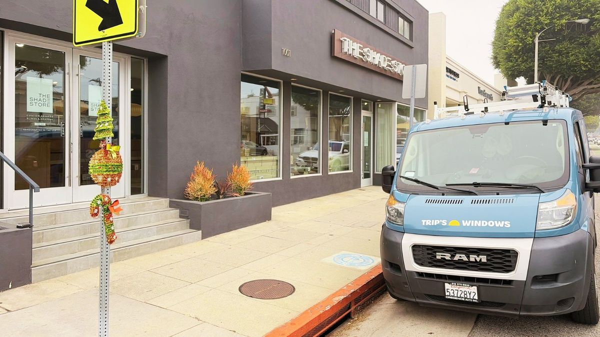

Why Clean Windows Drive Foot Traffic for LA Storefronts

If you run a retail store, restaurant, salon, or any street-facing business in Los Angeles, your windows are doing more work than you think. They're your first impression. They're your display case. And when they're dirty, they're silently turning potential customers away before they ever reach the door.
We clean commercial storefronts across LA — from Abbot Kinney and Rose Avenue in Venice to Montana Avenue in Santa Monica, the Sunset Strip in West Hollywood, Ventura Boulevard in Sherman Oaks, and Old Town Calabasas. The businesses that invest in regular window cleaning aren't doing it because they're fussy. They're doing it because it works.
First impressions happen at the glass
Most retail decisions start before the customer walks in. They're walking down the sidewalk, scanning storefronts, deciding which shops look worth entering. Your window is the first thing they evaluate — consciously or not. A smudged, hazy, or fingerprint-covered window signals neglect. A spotless window signals that you care about the details, and that what's inside is worth their time.
This is especially true for businesses that rely on visual merchandising. Clothing boutiques, jewelry stores, art galleries, home goods shops — if your products are displayed behind glass, that glass needs to be invisible. The moment a customer notices the window instead of what's behind it, you've lost the effect.
The LA dust factor
Los Angeles has a particular kind of grime problem. Coastal neighborhoods deal with salt spray and marine haze that films up glass within weeks. Valley locations like Sherman Oaks and Encino contend with heat, dust, and vehicle exhaust from heavy traffic corridors. And everywhere in LA, construction dust, pollen, and smog contribute to a persistent layer of buildup that accumulates faster than most business owners realize.
We've had restaurant owners tell us they didn't realize how dim their dining room had gotten until we cleaned the windows and natural light flooded back in. That's not an exaggeration — dirty glass can reduce light transmission by 20 to 40 percent. For restaurants and cafes, that's the difference between an inviting space and one that feels dark and uninviting.
What the research says
Retail studies consistently show that storefront appearance directly impacts foot traffic. A well-maintained exterior — clean windows, clean sidewalks, clear signage — can increase walk-in traffic by 10 to 15 percent compared to a neglected one. For businesses in high-foot-traffic areas like Third Street Promenade, Abbot Kinney, or Larchmont Village, that translates directly to revenue.
It's also a competitive signal. When your storefront looks sharp and the one next door doesn't, customers gravitate toward the business that looks like it has its act together. It's not logical — it's instinctive. People trust businesses that look clean and well-maintained.
How often should storefronts be cleaned?
It depends on your location and the type of business, but here's a general guideline based on what we see working for our commercial clients across LA:
- High-traffic retail corridors (Abbot Kinney, Montana Ave, Ventura Blvd, Melrose) — weekly or biweekly. Fingerprints, smudges, and dust accumulate daily in these areas.
- Restaurants and cafes — weekly. Grease, food residue, and condensation build up faster than in retail. Morning cleaning before opening is ideal.
- Professional offices (law firms, real estate, medical) — biweekly to monthly. Lower traffic but appearance still matters for client perception.
- Salons and boutiques — biweekly. Display windows need to stay crystal clear to showcase products and attract walk-ins.
Don't forget the sidewalk
Clean windows and a dirty sidewalk is a mixed message. Commercial pressure washing goes hand in hand with window cleaning — especially for restaurants with outdoor seating, storefronts with entryway tiles, and any business with a visible walkway. We offer commercial pressure washing that can be bundled with window cleaning for a cleaner, more complete result.
Gum, stains, grease, and general sidewalk grime all send the wrong signal. A pressure-washed entry paired with spotless windows tells every passerby that this is a business that pays attention.
The ROI of clean windows
Commercial window cleaning is one of the most cost-effective investments a storefront business can make. For most small retail locations, recurring biweekly service costs less than a single social media ad — and it works 24/7. Your windows are always on, always visible, and always contributing to (or detracting from) how people perceive your business.
The businesses that take this seriously tend to be the ones that last. We've been cleaning storefronts for the same shops on Abbot Kinney since 2020, and those owners will tell you — it's not a luxury, it's a line item.
Let's get your storefront dialed in
If you run a street-facing business anywhere in our service area — from Venice to Calabasas, Beverly Hills to Manhattan Beach — we'd love to set up a recurring commercial window cleaning schedule that fits your business. Early morning service, no disruption to your operations, and the same crew every visit so they know your space.
Request a free estimate and tell us about your location. We'll put together a flat-rate quote and have your windows looking sharp within the week.